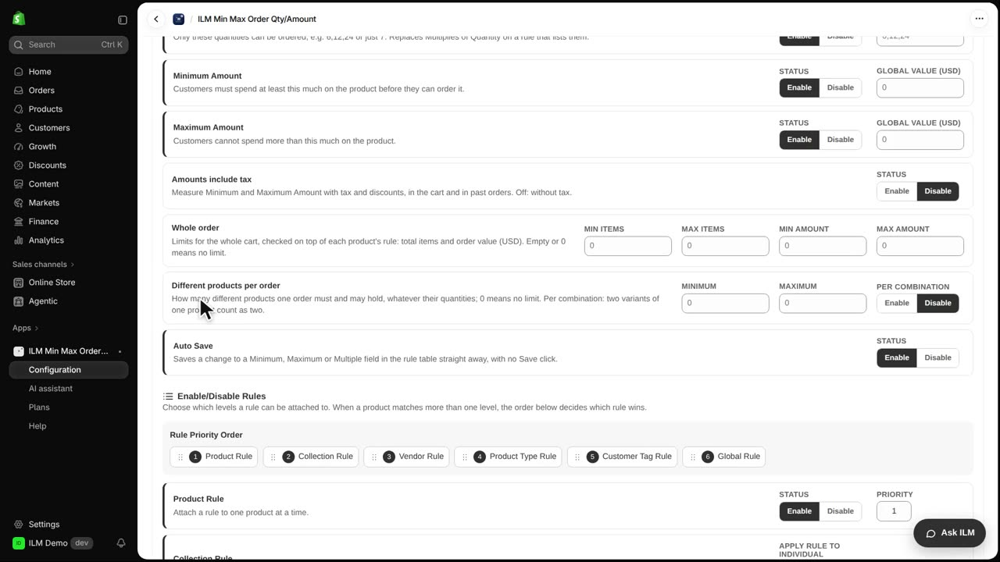
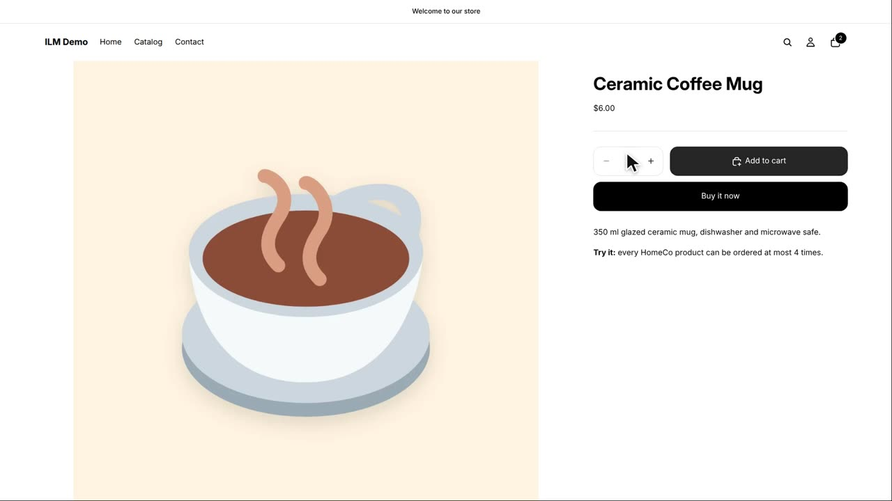
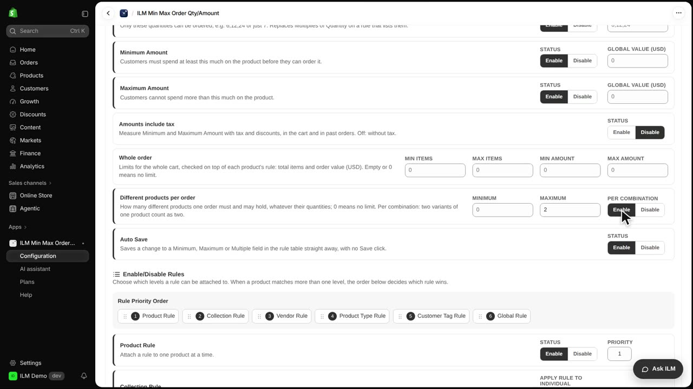
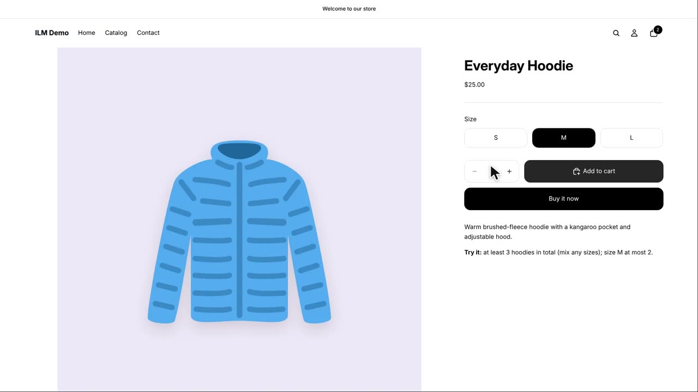

This lesson is about limiting how many different products a single order can contain, no matter how many units of each one the shopper buys. It is a simple way to keep one order from turning into a mixed basket of many unrelated items. In our example, the store allows at most two different products per order. We will see the setting, then watch a shopper try to add a third product and get stopped.
We start in the app's Configuration area, on the General page. Scroll down to the card called Different products per order. This is the section that controls the limit on how many distinct products can sit in one cart.

In the Maximum field we type two. That means an order may hold up to two different products. There is also a Minimum field here, which works the same way in reverse: leave it empty and there is no lower limit, so a shopper can buy just one product. We leave it empty for now.
Now we move to the storefront. The cart already contains a Classic Cotton T-shirt and a Baseball Cap, which is two different products. The shopper opens the Ceramic Coffee Mug page and clicks Add to cart to try for a third.

Shopify refuses the add. An error appears on the product page explaining that a third different product is not allowed. The cart keeps its two products, the T-shirt and the Baseball Cap, and nothing is lost.
Back in Configuration, we look at the Per combination option. When this is on, every variant counts as its own product, so a hoodie in size small and the same hoodie in size medium are treated as two separate products. We click Enable to turn it on.

To test it, the cart holds a Classic Cotton T-shirt and an Everyday Hoodie in size small, which is two products. The shopper opens the Everyday Hoodie page again and adds size medium. Because Per combination is on, that variant counts as a third product, so the add is refused and the error appears again.
